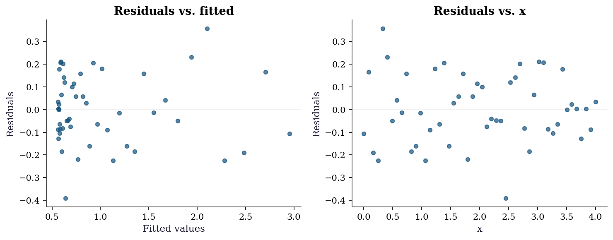
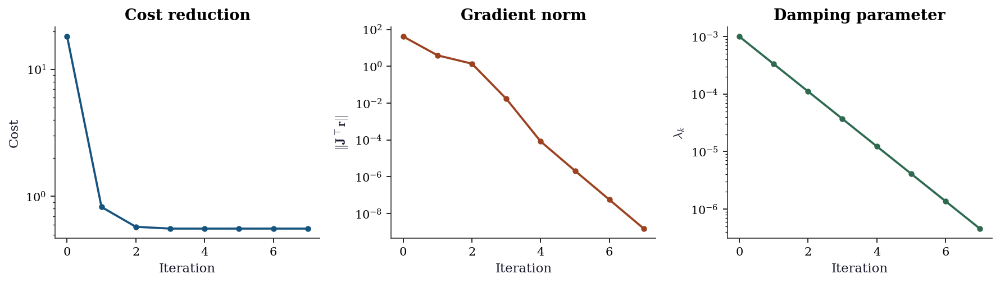
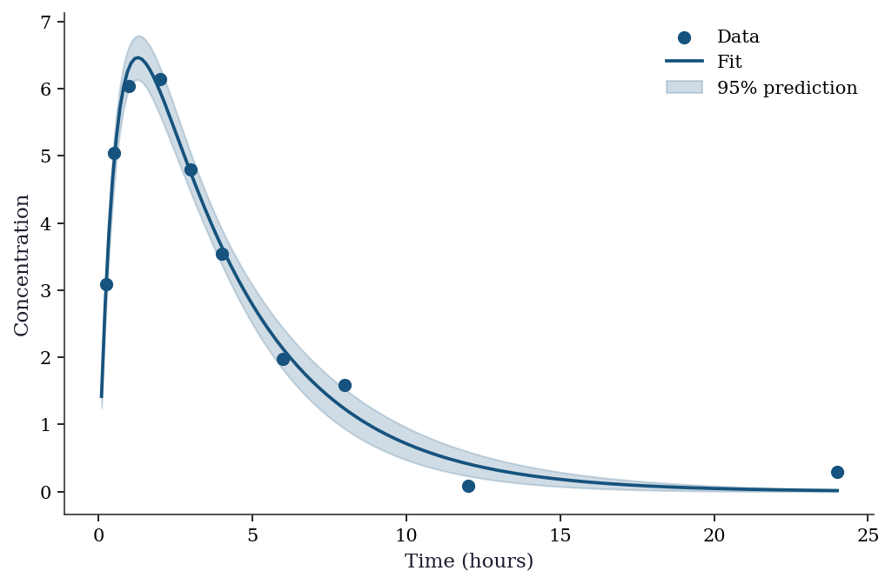
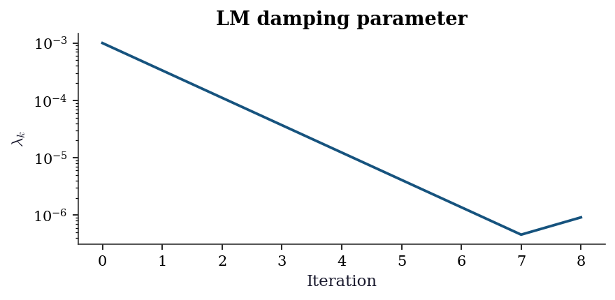

import numpy as np
import matplotlib.pyplot as plt
from scipy.optimize import least_squares, curve_fit, root, minimize
from scipy.linalg import svd
plt.style.use('assets/book.mplstyle')
rng = np.random.default_rng(42)6 Nonlinear Least Squares and Implicit Estimation
6.0.1 Notation for this chapter
| Symbol | Meaning | scipy parameter |
|---|---|---|
| \(\mathbf{r}(\boldsymbol{\theta})\) | Residual vector: \(r_i = y_i - m(\mathbf{x}_i; \boldsymbol{\theta})\) | fun in least_squares |
| \(\mathbf{J}(\boldsymbol{\theta})\) | Jacobian of residuals (\(n \times p\)) | jac in least_squares |
| \(m(\mathbf{x}; \boldsymbol{\theta})\) | Model function | f in curve_fit |
| \(\boldsymbol{\theta}\) | Parameter vector | x0 / p0 |
| \(S(\boldsymbol{\theta}) = \|\mathbf{r}(\boldsymbol{\theta})\|^2\) | Sum of squared residuals | 2 * result.cost |
| \(\Delta\) | Trust-region radius (Levenberg–Marquardt) | |
| \(\lambda\) | Damping parameter (LM) |
6.1 Motivation
Every time you fit a model to data by minimizing squared error, you are solving a nonlinear least-squares problem. curve_fit is the one-liner that most Python users reach for: give it a model function, data, and initial parameters, and it returns estimates with standard errors. Under the hood, it calls least_squares, which dispatches to one of three algorithms: Levenberg–Marquardt (lm), trust-region reflective (trf), or dogleg (dogbox).
This chapter explains what these algorithms do, why they work, and when they fail. The key insight is structural: a sum-of-squares objective \(S(\boldsymbol{\theta}) = \sum_i r_i(\boldsymbol{\theta})^2\) has a Hessian that decomposes as \(\nabla^2 S = 2\mathbf{J}^\top\mathbf{J} + 2\sum_i r_i \nabla^2 r_i\). When the residuals are small at the solution, the second term is negligible, and the Hessian is well-approximated by \(2\mathbf{J}^\top\mathbf{J}\)—a matrix you already have from the Jacobian. This is why least-squares problems are easier than general optimization: you get second-order information (the approximate Hessian) for the price of first-order information (the Jacobian).
The chapter also covers root finding (scipy.optimize.root), because root finding and least squares are two views of the same problem: find \(\boldsymbol{\theta}\) such that \(\mathbf{F}(\boldsymbol{\theta}) = \mathbf{0}\). For least squares, \(\mathbf{F} = \nabla S = 2\mathbf{J}^\top\mathbf{r}\). For root finding, \(\mathbf{F}\) is the system of equations directly.
6.2 Mathematical Foundation
6.2.1 The Gauss–Newton approximation
The objective is \(S(\boldsymbol{\theta}) = \mathbf{r}(\boldsymbol{\theta})^\top \mathbf{r}(\boldsymbol{\theta})\). Its gradient and Hessian are: \[\begin{align} \nabla S &= 2\mathbf{J}^\top \mathbf{r}, \\ \nabla^2 S &= 2\mathbf{J}^\top\mathbf{J} + 2\sum_{i=1}^n r_i \nabla^2 r_i. \end{align}\]
The Gauss–Newton method drops the second-order term \(\sum r_i \nabla^2 r_i\) and uses \(\mathbf{J}^\top\mathbf{J}\) as the approximate Hessian. The resulting step is:
\[ \mathbf{p}_k = -(\mathbf{J}_k^\top\mathbf{J}_k)^{-1}\mathbf{J}_k^\top\mathbf{r}_k. \tag{6.1}\]
This is the solution to the linear least-squares problem \(\min_\mathbf{p} \|\mathbf{J}_k \mathbf{p} + \mathbf{r}_k\|^2\)—i.e., minimizing the linearized residual. The connection to Newton’s method: if the residuals are small at the solution (\(\|\mathbf{r}^*\| \approx 0\)), the omitted term is small and Gauss–Newton inherits Newton’s fast convergence. If the residuals are large (the model doesn’t fit well), the approximation is poor and Gauss–Newton may converge slowly or diverge.
Why this matters for curve_fit: The standard errors reported by curve_fit come from the inverse of \(\mathbf{J}^\top\mathbf{J}\) at the solution: \(\text{Cov}(\hat{\boldsymbol{\theta}}) \approx \hat{\sigma}^2 (\mathbf{J}^\top\mathbf{J})^{-1}\), where \(\hat{\sigma}^2 = S(\hat{\boldsymbol{\theta}})/(n-p)\). This is the Gauss–Newton Hessian approximation, inverted and scaled. When the residuals are large, these standard errors are unreliable because the Hessian approximation is poor.
6.2.2 Levenberg–Marquardt: trust-region least squares
Gauss–Newton can fail when \(\mathbf{J}^\top\mathbf{J}\) is nearly singular or when the step Equation 6.1 is too large. The Levenberg–Marquardt (LM) method adds a damping term:
\[ \mathbf{p}_k = -(\mathbf{J}_k^\top\mathbf{J}_k + \lambda_k \mathbf{I})^{-1}\mathbf{J}_k^\top\mathbf{r}_k. \tag{6.2}\]
When \(\lambda_k\) is small, this is close to the Gauss–Newton step. When \(\lambda_k\) is large, the step is close to the scaled steepest-descent direction \(-\frac{1}{\lambda_k}\mathbf{J}^\top\mathbf{r}\). The LM method is equivalent to solving a trust-region subproblem with the Gauss–Newton Hessian approximation:
\[ \min_\mathbf{p} \|\mathbf{J}_k\mathbf{p} + \mathbf{r}_k\|^2 \quad \text{s.t.} \quad \|\mathbf{p}\| \leq \Delta_k. \]
The damping parameter \(\lambda_k\) is the Lagrange multiplier for this constraint. See Chapter 3 for the full theory of Lagrange multipliers and KKT conditions; here we only need the intuition that \(\lambda_k\) penalizes the step size, trading off between the Gauss–Newton direction and a shorter, safer step. Scipy’s least_squares(method='lm') implements this.
Why scipy has three methods:
'lm'(Levenberg–Marquardt): the classic. Fast for small-to-medium problems. No bound constraints. Wraps MINPACK’slmder.'trf'(trust-region reflective): handles bound constraints. Reflects the step when it hits a bound. Better for bounded problems.'dogbox'(dogleg in a box): combines Gauss–Newton and steepest descent steps within bounds. Simpler than TRF, sometimes faster.
6.2.3 Root finding
A system of \(n\) equations in \(n\) unknowns \(\mathbf{F}(\mathbf{x}) = \mathbf{0}\) is solved by Newton’s method:
\[ \mathbf{x}_{k+1} = \mathbf{x}_k - \mathbf{J}_F(\mathbf{x}_k)^{-1}\mathbf{F}(\mathbf{x}_k), \]
where \(\mathbf{J}_F\) is the Jacobian of \(\mathbf{F}\). This is the same as Newton’s method for optimization when \(\mathbf{F} = \nabla f\).
When the Jacobian is expensive, Broyden’s method approximates it:
\[ \mathbf{B}_{k+1} = \mathbf{B}_k + \frac{(\mathbf{F}_{k+1} - \mathbf{F}_k - \mathbf{B}_k \mathbf{s}_k)\mathbf{s}_k^\top}{\mathbf{s}_k^\top \mathbf{s}_k}. \tag{6.3}\]
This is the rank-one analogue of the BFGS update from Chapter 2: it satisfies the secant equation \(\mathbf{B}_{k+1}\mathbf{s}_k = \mathbf{F}_{k+1} - \mathbf{F}_k\) with the minimal change from \(\mathbf{B}_k\). Scipy’s root(method='broyden1') implements this.
6.2.4 Convergence rates
Newton’s method for root finding enjoys quadratic convergence when the Jacobian \(\mathbf{J}_F(\mathbf{x}^*)\) is nonsingular at the solution. Near \(\mathbf{x}^*\), Taylor-expand \(\mathbf{F}\):
\[ \mathbf{0} = \mathbf{F}(\mathbf{x}^*) = \mathbf{F}(\mathbf{x}_k) + \mathbf{J}_F(\mathbf{x}_k)(\mathbf{x}^* - \mathbf{x}_k) + O(\|\mathbf{x}_k - \mathbf{x}^*\|^2). \]
The Newton step sets \(\mathbf{x}_{k+1} = \mathbf{x}_k - \mathbf{J}_F^{-1}\mathbf{F}(\mathbf{x}_k)\). Substituting and rearranging:
\[ \|\mathbf{x}_{k+1} - \mathbf{x}^*\| = O(\|\mathbf{x}_k - \mathbf{x}^*\|^2). \]
The number of correct digits roughly doubles each iteration — spectacular when it kicks in, but it only kicks in locally. Far from the solution, Newton can diverge or cycle. This is why scipy.optimize.root(method='hybr') wraps Newton in a trust-region framework (Powell’s hybrid method): it uses Newton’s direction when the step is reasonable and falls back to a scaled gradient step when Newton’s step is too aggressive.
For Gauss–Newton applied to least squares, the convergence rate depends on the residual size at the solution. When \(\|\mathbf{r}^*\| \approx 0\) (the model fits well), the omitted Hessian term \(\sum r_i \nabla^2 r_i\) is negligible and Gauss–Newton inherits Newton’s fast convergence. When residuals are large, convergence degrades to linear because the approximation \(\nabla^2 S \approx 2\mathbf{J}^\top\mathbf{J}\) is poor. Levenberg–Marquardt does not improve the convergence rate, but its damping prevents the catastrophic divergence that makes raw Gauss–Newton unusable in the large-residual regime.
6.3 The Algorithm
6.4 Statistical Properties
The connection between nonlinear least squares and statistical inference is through the Gauss–Newton covariance:
\[ \text{Cov}(\hat{\boldsymbol{\theta}}) \approx \hat{\sigma}^2 (\mathbf{J}^\top\mathbf{J})^{-1}, \quad \hat{\sigma}^2 = \frac{S(\hat{\boldsymbol{\theta}})}{n - p}. \]
This is the formula behind curve_fit’s pcov output. It is valid when: (1) the model is approximately linear near \(\hat{\boldsymbol{\theta}}\), (2) the residuals are small (the model fits), and (3) the errors are approximately homoscedastic. When any of these fail, the standard errors are unreliable — and curve_fit gives no warning.
The matrix \(\mathbf{J}^\top\mathbf{J}\) is the observed information in the Gauss–Newton approximation. In Chapter 10 (Wald/Score/LR), we develop the full observed information and show when this approximation is exact (linear models) and when it is not (nonlinear models with large residuals).
6.5 SciPy Implementation
6.5.1 curve_fit: the one-liner
def exp_decay(x, a, b, c):
"""Exponential decay model: a * exp(-b*x) + c."""
return a * np.exp(-b * x) + c
# Generate synthetic data
x_data = np.linspace(0, 4, 50)
y_true = exp_decay(x_data, 2.5, 1.3, 0.5)
y_data = y_true + 0.2 * rng.standard_normal(50)
# Fit
popt, pcov = curve_fit(
f=exp_decay,
xdata=x_data,
ydata=y_data,
p0=[1, 1, 0], # initial guess (required for nonlinear)
method='lm', # default: Levenberg-Marquardt
)
perr = np.sqrt(np.diag(pcov)) # standard errors
print(f"{'Param':<6} {'True':>8} {'Estimate':>10} {'SE':>8}")
for name, true, est, se in zip(
['a', 'b', 'c'], [2.5, 1.3, 0.5], popt, perr
):
print(f"{name:<6} {true:>8.3f} {est:>10.4f} {se:>8.4f}")Param True Estimate SE
a 2.500 2.4051 0.0924
b 1.300 1.3400 0.1101
c 0.500 0.5501 0.0394Key defaults to know:
method='lm': Levenberg–Marquardt (MINPACK). No bounds support. Switch tomethod='trf'if you need parameter bounds.p0: Initial guess. Required for nonlinear models. A badp0can land you in a local minimum. There is no global search.absolute_sigma=False(default):pcovis scaled by the reduced chi-squared \(\chi^2/(n-p)\). Setabsolute_sigma=Trueif your errors have known absolute scale.
6.5.2 least_squares: the full API
def residuals(params, x, y):
a, b, c = params
return exp_decay(x, a, b, c) - y
def jacobian(params, x, y):
a, b, c = params
J = np.zeros((len(x), 3))
J[:, 0] = np.exp(-b * x) # dr/da
J[:, 1] = -a * x * np.exp(-b * x) # dr/db
J[:, 2] = np.ones(len(x)) # dr/dc
return J
# Method comparison
for method in ['lm', 'trf', 'dogbox']:
res = least_squares(
fun=residuals,
x0=[1, 1, 0],
jac=jacobian,
args=(x_data, y_data),
method=method,
)
print(f"{method:>6}: params={res.x.round(4)}, "
f"cost={res.cost:.4f}, nfev={res.nfev}") lm: params=[2.4051 1.34 0.5501], cost=0.5579, nfev=6
trf: params=[2.4051 1.34 0.5501], cost=0.5579, nfev=6
dogbox: params=[2.4051 1.34 0.5501], cost=0.5579, nfev=6Why three methods?
| Method | Algorithm | Bounds | Best for |
|---|---|---|---|
'lm' |
Levenberg–Marquardt (MINPACK) | No | Small unbounded problems |
'trf' |
Trust-region reflective | Yes | Bounded problems, sparse Jacobians |
'dogbox' |
Dogleg in a box | Yes | Small bounded problems |
6.5.3 root: solving nonlinear systems
# Solve: x0 + 0.5*(x0-x1)^3 = 1, 0.5*(x1-x0)^3 + x1 = 0
def system(x):
return [
x[0] + 0.5 * (x[0] - x[1])**3 - 1,
0.5 * (x[1] - x[0])**3 + x[1],
]
for method in ['hybr', 'broyden1']:
sol = root(system, [0, 0], method=method)
print(f"{method:>9}: x={sol.x.round(6)}, "
f"success={sol.success}, nfev={sol.nfev}") hybr: x=[0.841164 0.158836], success=True, nfev=14
broyden1: x=[0.841164 0.158836], success=True, nfev=24hybr (default) uses Powell’s hybrid method: Newton with a dogleg trust region. broyden1 uses Broyden’s rank-one update (Equation 6.3), which avoids computing the Jacobian at every step.
6.5.4 Robust loss functions in least_squares
When outliers contaminate the data, squared residuals give them outsized influence. least_squares supports robust loss functions that down-weight large residuals via the loss parameter. Each replaces the squared loss \(r_i^2\) with a function \(\rho(r_i^2)\) that grows more slowly for large \(|r_i|\):
| Loss | \(\rho(z)\) where \(z = r^2\) | Behavior |
|---|---|---|
'linear' |
\(z\) | Standard LS |
'huber' |
\(z\) if \(z \leq 1\); \(2\sqrt{z}-1\) otherwise | Linear tails |
'soft_l1' |
\(2(\sqrt{1+z} - 1)\) | Smooth \(\ell_1\) approx |
'cauchy' |
\(\ln(1+z)\) | Heaviest down-weighting |
The f_scale parameter sets the inlier threshold: residuals smaller than f_scale are treated as inliers (\(\rho \approx z\)), and those above are down-weighted. Getting f_scale right matters more than the choice of loss function — set it to the expected noise level of your clean data.
# Corrupt the exponential decay data with two outliers
y_outliers = y_data.copy()
y_outliers[5] = 5.0 # large positive outlier
y_outliers[20] = -1.0 # negative outlier
losses = ['linear', 'huber', 'soft_l1', 'cauchy']
print(f"{'Loss':<10} {'a':>8} {'b':>8} {'c':>8}"
f" {'cost':>8}")
for loss in losses:
res = least_squares(
fun=residuals,
x0=[1, 1, 0],
args=(x_data, y_outliers),
loss=loss,
f_scale=0.2, # expected noise level
method='trf', # robust losses require trf/dogbox
)
a, b, c = res.x
print(f"{loss:<10} {a:>8.4f} {b:>8.4f}"
f" {c:>8.4f} {res.cost:>8.4f}")
print(f"\n{'True':<10} {'2.5':>8} {'1.3':>8}"
f" {'0.5':>8}")Loss a b c cost
linear 2.8223 1.2878 0.4802 6.5250
huber 2.5098 1.3196 0.5309 1.4176
soft_l1 2.5147 1.3286 0.5362 1.3089
cauchy 2.5082 1.3373 0.5445 0.5386
True 2.5 1.3 0.5Standard least squares ('linear') is pulled toward the outliers. Cauchy loss recovers parameters closest to the truth because it down-weights outliers most aggressively, at the cost of slower convergence. Note that method='lm' does not support robust losses — you must use 'trf' or 'dogbox'.
These robust losses are M-estimators with different influence functions — the connection developed fully in Chapter 12 (GLMs and M-estimation). The practical hierarchy: try 'huber' first (mildest correction), escalate to 'cauchy' for heavy contamination, and always set f_scale to the noise level you would expect in clean data.
6.6 From-Scratch Implementation
Gauss–Newton in ~20 lines of NumPy.
def gauss_newton(fun, jac, x0, args=(), tol=1e-8, maxiter=100):
"""Gauss-Newton for nonlinear least squares.
Implements Algorithm 6.1. Parameters match least_squares API.
Parameters
----------
fun : callable
Residual function r(params, *args) -> (n,) array.
jac : callable
Jacobian function jac(params, *args) -> (n, p) array.
x0 : array
Initial parameter guess.
"""
x = np.asarray(x0, dtype=float).copy()
for k in range(maxiter):
r = fun(x, *args)
J = jac(x, *args)
# Normal equations: (J'J) p = J'r
p = np.linalg.solve(J.T @ J, J.T @ r)
x = x - p # note: residual = data - model, so subtract
if np.linalg.norm(p) < tol:
break
return {'x': x, 'cost': 0.5 * np.sum(fun(x, *args)**2),
'nit': k, 'success': np.linalg.norm(p) < tol}6.6.1 Verification
# Note: our residuals are model - data, so the Gauss-Newton step adds p
def residuals_gn(params, x, y):
return exp_decay(x, *params) - y
res_gn = gauss_newton(residuals_gn, jacobian, [1, 1, 0],
args=(x_data, y_data))
res_scipy = least_squares(residuals, [1, 1, 0], jac=jacobian,
args=(x_data, y_data), method='lm')
print(f"Gauss-Newton: params={res_gn['x'].round(4)}, "
f"cost={res_gn['cost']:.4f}")
print(f"scipy LM: params={res_scipy.x.round(4)}, "
f"cost={res_scipy.cost:.4f}")
print(f"Match: {np.allclose(res_gn['x'], res_scipy.x, atol=1e-3)}")Gauss-Newton: params=[2.4051 1.34 0.5501], cost=0.5579
scipy LM: params=[2.4051 1.34 0.5501], cost=0.5579
Match: True6.6.2 Levenberg–Marquardt from scratch
The key addition over Gauss–Newton is the damping term \(\lambda_k \mathbf{I}\) and the gain ratio \(\rho_k\) that controls how \(\lambda\) adapts. When a step produces a good reduction (\(\rho > 0.25\)), we trust the quadratic model more and shrink \(\lambda\); when the step is poor, we increase \(\lambda\) to pull toward steepest descent.
def levenberg_marquardt(fun, jac, x0, args=(),
tol=1e-8, maxiter=100,
lam0=1e-3):
"""Levenberg-Marquardt for nonlinear least squares.
Implements Algorithm 6.2. Tracks convergence history
for diagnostics.
Parameters
----------
fun : callable
Residual function r(params, *args) -> (n,) array.
jac : callable
Jacobian function jac(params, *args) -> (n, p).
x0 : array
Initial parameter guess.
lam0 : float
Initial damping parameter.
"""
x = np.asarray(x0, dtype=float).copy()
lam = lam0
history = {'cost': [], 'lam': [], 'grad_norm': []}
for k in range(maxiter):
r = fun(x, *args)
J = jac(x, *args)
JtJ = J.T @ J
Jtr = J.T @ r
cost = 0.5 * np.sum(r**2)
history['cost'].append(cost)
history['lam'].append(lam)
history['grad_norm'].append(
np.linalg.norm(Jtr)
)
# Damped normal equations (Algorithm 6.2, step 3)
A = JtJ + lam * np.eye(len(x))
p = np.linalg.solve(A, Jtr)
x_trial = x - p
# Gain ratio: actual vs predicted reduction
r_trial = fun(x_trial, *args)
actual = np.sum(r**2) - np.sum(r_trial**2)
lin_pred = J @ (-p) + r
predicted = np.sum(r**2) - np.sum(lin_pred**2)
if predicted > 0:
rho = actual / predicted
else:
rho = 0
# Adaptive damping (Algorithm 6.2, steps 5--6)
if rho > 0.25:
x = x_trial # accept step
lam = max(lam / 3, 1e-15)
else:
lam = min(lam * 2, 1e15) # reject step
if np.linalg.norm(p) < tol:
break
r_final = fun(x, *args)
cost_final = 0.5 * np.sum(r_final**2)
history['cost'].append(cost_final)
return {'x': x, 'cost': cost_final,
'nit': k + 1, 'history': history}res_lm = levenberg_marquardt(
residuals_gn, jacobian, [1, 1, 0],
args=(x_data, y_data),
)
res_lm_scipy = least_squares(
fun=residuals, x0=[1, 1, 0], jac=jacobian,
args=(x_data, y_data), method='lm',
)
print("Levenberg-Marquardt verification:")
print(f" From-scratch: {res_lm['x'].round(4)}, "
f"cost={res_lm['cost']:.6f}")
print(f" scipy LM: {res_lm_scipy.x.round(4)}, "
f"cost={res_lm_scipy.cost:.6f}")
print(f" Match: {np.allclose(res_lm['x'], res_lm_scipy.x, atol=1e-3)}")Levenberg-Marquardt verification:
From-scratch: [2.4051 1.34 0.5501], cost=0.557945
scipy LM: [2.4051 1.34 0.5501], cost=0.557945
Match: True6.6.3 Newton’s method for root finding from scratch
Root finding is the mirror image of least squares: instead of minimizing \(\|\mathbf{r}\|^2\), we solve \(\mathbf{F}(\mathbf{x}) = \mathbf{0}\) directly. Newton’s method uses the Jacobian of \(\mathbf{F}\) (not \(\mathbf{J}^\top\mathbf{J}\)) to compute the step. The implementation is simpler than Gauss–Newton because there is no sum-of-squares structure to exploit.
def newton_root(fun, jac, x0, tol=1e-10, maxiter=50):
"""Newton's method for root finding.
Solves F(x) = 0 by iterating
x_{k+1} = x_k - J_F(x_k)^{-1} F(x_k).
Parameters
----------
fun : callable
System F(x) -> (n,) array.
jac : callable
Jacobian J_F(x) -> (n, n) array.
x0 : array
Initial guess.
"""
x = np.asarray(x0, dtype=float).copy()
for k in range(maxiter):
F = np.asarray(fun(x), dtype=float)
J = np.asarray(jac(x), dtype=float)
step = np.linalg.solve(J, F)
x = x - step
if np.linalg.norm(step) < tol:
break
F_final = np.asarray(fun(x), dtype=float)
return {'x': x, 'nit': k + 1,
'success': np.linalg.norm(F_final) < tol}def system_jac(x):
"""Analytical Jacobian for the test system."""
J = np.zeros((2, 2))
# d/dx0 of [x0 + 0.5*(x0-x1)^3 - 1]
J[0, 0] = 1 + 1.5 * (x[0] - x[1])**2
J[0, 1] = -1.5 * (x[0] - x[1])**2
# d/dx1 of [0.5*(x1-x0)^3 + x1]
J[1, 0] = -1.5 * (x[1] - x[0])**2
J[1, 1] = 1 + 1.5 * (x[1] - x[0])**2
return J
res_nr = newton_root(system, system_jac, [0.0, 0.0])
res_root_scipy = root(system, [0, 0], method='hybr')
print("Newton root-finding verification:")
print(f" From-scratch: x={res_nr['x'].round(6)}, "
f"iters={res_nr['nit']}")
print(f" scipy hybr: x={res_root_scipy.x.round(6)}"
f", nfev={res_root_scipy.nfev}")
print(f" Match: {np.allclose(res_nr['x'], res_root_scipy.x, atol=1e-6)}")Newton root-finding verification:
From-scratch: x=[0.841164 0.158836], iters=6
scipy hybr: x=[0.841164 0.158836], nfev=14
Match: TrueNewton converges in very few iterations on this problem — typical of quadratic convergence when started reasonably close. The hybr method uses more function evaluations because it also evaluates the Jacobian numerically (we did not supply one) and includes safeguarding logic.
6.7 Diagnostics
6.7.1 Residual analysis
r_final = residuals(popt, x_data, y_data)
y_fitted = exp_decay(x_data, *popt)
fig, (ax1, ax2) = plt.subplots(1, 2, figsize=(10, 4))
ax1.scatter(y_fitted, r_final, s=20, alpha=0.7)
ax1.axhline(0, color='gray', linewidth=0.5)
ax1.set_xlabel("Fitted values")
ax1.set_ylabel("Residuals")
ax1.set_title("Residuals vs. fitted")
ax2.scatter(x_data, r_final, s=20, alpha=0.7)
ax2.axhline(0, color='gray', linewidth=0.5)
ax2.set_xlabel("x")
ax2.set_ylabel("Residuals")
ax2.set_title("Residuals vs. x")
plt.tight_layout()
plt.show()
6.7.2 Checking the covariance matrix
# Compare curve_fit's pcov with the Gauss-Newton formula
J_final = jacobian(popt, x_data, y_data)
sigma2 = np.sum(r_final**2) / (len(y_data) - len(popt))
cov_manual = sigma2 * np.linalg.inv(J_final.T @ J_final)
print("curve_fit pcov diagonal:", np.diag(pcov).round(6))
print("Manual J'J inverse: ", np.diag(cov_manual).round(6))
print("Match:", np.allclose(pcov, cov_manual, rtol=1e-4))curve_fit pcov diagonal: [0.008534 0.012128 0.001551]
Manual J'J inverse: [0.008534 0.012129 0.001551]
Match: TrueWhen these don’t match, it usually means curve_fit used absolute_sigma=False (the default) while your manual calculation used the raw residuals. The scaling factor is \(\chi^2/(n-p)\).
6.7.3 When to distrust curve_fit’s standard errors
Three warning signs:
Large residuals. If \(\hat{\sigma}^2 \gg\) the variance of your measurements, the model doesn’t fit and the Gauss–Newton covariance is unreliable.
Near-singular Jacobian. If
np.linalg.cond(J.T @ J)is large (\(> 10^{10}\)), the parameters are poorly identified—small changes in the data cause large changes in the estimates.Dependence on
p0. If different starting points give different solutions with similar cost, the problem has multiple local minima andcurve_fitfound only one.
6.7.4 Convergence monitoring
Scipy’s least_squares does not expose per-iteration diagnostics. The from-scratch Levenberg–Marquardt implementation above tracks three quantities that together tell you whether the optimizer is behaving:
- Cost \(S_k = \|\mathbf{r}_k\|^2\): should decrease monotonically (LM rejects steps that increase it). A plateau means the algorithm has converged or is stuck.
- Gradient norm \(\|\mathbf{J}_k^\top\mathbf{r}_k\|\): measures first-order optimality. At a local minimum it should be near zero. If it plateaus at a large value, the algorithm is stuck at a non-stationary point — likely a saddle or a flat region.
- Damping parameter \(\lambda_k\): reveals the algorithm’s strategy. Decreasing \(\lambda\) means the quadratic model is trustworthy (Gauss–Newton regime). Increasing \(\lambda\) means the algorithm is struggling and falling back to steepest descent. A \(\lambda\) that never decreases signals a poor starting point or an ill-conditioned problem.
hist = res_lm['history']
n_iters = len(hist['lam'])
fig, (ax1, ax2, ax3) = plt.subplots(
1, 3, figsize=(12, 3.5)
)
ax1.semilogy(range(n_iters), hist['cost'][:-1],
'o-', markersize=4)
ax1.set_xlabel("Iteration")
ax1.set_ylabel("Cost")
ax1.set_title("Cost reduction")
ax2.semilogy(range(n_iters), hist['grad_norm'],
'o-', markersize=4, color="C1")
ax2.set_xlabel("Iteration")
ax2.set_ylabel(r"$\|\mathbf{J}^\top\mathbf{r}\|$")
ax2.set_title("Gradient norm")
ax3.semilogy(range(n_iters), hist['lam'],
'o-', markersize=4, color="C2")
ax3.set_xlabel("Iteration")
ax3.set_ylabel(r"$\lambda_k$")
ax3.set_title("Damping parameter")
plt.tight_layout()
plt.show()
When you see pathological patterns — cost oscillating instead of decreasing, gradient norm stuck at a large value, or \(\lambda\) growing without bound — the most productive fix is usually a better starting point x0, not a different algorithm. For curve_fit, try plotting your model with the initial p0 values overlaid on the data: if the initial curve is nowhere near the data, no local optimizer will save you.
6.8 Computational Considerations
| Method | Per-iteration cost | Storage | Notes |
|---|---|---|---|
| Gauss–Newton | \(O(np^2)\) for \(\mathbf{J}^\top\mathbf{J}\) + \(O(p^3)\) solve | \(O(np)\) for \(\mathbf{J}\) | Fails if \(\mathbf{J}^\top\mathbf{J}\) singular |
| LM | Same as GN + \(O(p^2)\) for damping | Same | Robust to singularity |
| TRF | \(O(np^2)\) + sparse structure if available | \(O(np)\) | Best for sparse \(\mathbf{J}\) |
For large \(n\) and small \(p\) (typical in curve fitting: thousands of data points, 3–10 parameters), the dominant cost is the \(n \times p\) Jacobian evaluation. Supplying an analytical Jacobian (as we did above) avoids the \(O(np)\) cost of finite differencing.
When to supply an analytical Jacobian. For 3–10 parameter problems, finite-difference Jacobians (the default when jac is not supplied) add \(p\) extra function evaluations per iteration. This is tolerable when the residual function is cheap but significant when it involves solving a differential equation or running a simulation at each evaluation. The analytical Jacobian also improves convergence reliability: finite-difference approximations introduce noise that can confuse the trust-region logic, especially near the solution where the step size is small and the finite-difference perturbation is comparable to the machine precision times the parameter scale.
For systems large enough that forming the full \(n \times n\) Jacobian is impractical, scipy.optimize.root supports Jacobian-free Newton–Krylov methods via method='krylov'. These compute the matrix–vector product \(\mathbf{J}\mathbf{v}\) via finite differences without ever forming \(\mathbf{J}\) explicitly, then solve the Newton system iteratively using GMRES or BiCGSTAB. The cost per iteration drops from \(O(n^2)\) storage and \(O(n^3)\) factorization to \(O(n)\) storage and \(O(kn)\) work for \(k\) Krylov iterations. The tradeoff is slower convergence (the linear system is solved only approximately), but for large systems this is the only feasible approach.
6.9 Worked Example
Fitting a pharmacokinetic model: drug concentration as a function of time after oral administration.
def pk_model(t, ka, ke, V, D=100):
"""One-compartment PK model with first-order absorption.
Parameters: ka (absorption rate), ke (elimination rate),
V (volume of distribution), D (dose, fixed at 100).
"""
return (D * ka / (V * (ka - ke))) * (np.exp(-ke * t) - np.exp(-ka * t))
# Simulate data
t_data = np.array([0.25, 0.5, 1, 2, 3, 4, 6, 8, 12, 24])
true_params = [1.5, 0.3, 10]
y_pk = pk_model(t_data, *true_params)
y_pk_noisy = y_pk + 0.3 * rng.standard_normal(len(t_data))
y_pk_noisy = np.maximum(y_pk_noisy, 0) # concentrations can't be negative# Fit with bounds (rates and volume must be positive)
res_pk = least_squares(
fun=lambda p, t, y: pk_model(t, *p) - y,
x0=[1.0, 0.5, 15],
args=(t_data, y_pk_noisy),
bounds=([0, 0, 0], [np.inf, np.inf, np.inf]),
method='trf',
)
# Also fit with curve_fit for standard errors
popt_pk, pcov_pk = curve_fit(
pk_model, t_data, y_pk_noisy,
p0=[1.0, 0.5, 15],
bounds=([0, 0, 0], [np.inf, np.inf, np.inf]),
method='trf',
)
perr_pk = np.sqrt(np.diag(pcov_pk))
print(f"{'Param':<5} {'True':>8} {'Est':>8} {'SE':>8}")
for name, true, est, se in zip(
['ka', 'ke', 'V'], true_params, popt_pk, perr_pk
):
print(f"{name:<5} {true:>8.3f} {est:>8.3f} {se:>8.3f}")Param True Est SE
ka 1.500 1.709 0.192
ke 0.300 0.272 0.026
V 10.000 10.921 0.666t_fine = np.linspace(0.1, 24, 200)
y_fit = pk_model(t_fine, *popt_pk)
# Prediction interval via delta method
J_fine = np.zeros((len(t_fine), 3))
eps = 1e-6
for j in range(3):
p_up = popt_pk.copy(); p_up[j] += eps
p_dn = popt_pk.copy(); p_dn[j] -= eps
J_fine[:, j] = (pk_model(t_fine, *p_up) - pk_model(t_fine, *p_dn)) / (2*eps)
var_pred = np.sum((J_fine @ pcov_pk) * J_fine, axis=1)
se_pred = np.sqrt(var_pred)
fig, ax = plt.subplots()
ax.scatter(t_data, y_pk_noisy, s=40, zorder=5, label="Data")
ax.plot(t_fine, y_fit, color="C0", linewidth=1.8, label="Fit")
ax.fill_between(t_fine, y_fit - 1.96*se_pred, y_fit + 1.96*se_pred,
alpha=0.2, color="C0", label="95% prediction")
ax.set_xlabel("Time (hours)")
ax.set_ylabel("Concentration")
ax.legend()
plt.show()
6.10 Exercises
Exercise 6.1 (\(\star\star\), diagnostic failure). Fit curve_fit to the model \(y = a \sin(bx + c) + d\) with data that actually follows \(y = a_1 \sin(b_1 x) + a_2 \sin(b_2 x) + \text{noise}\) (two frequencies). Try different starting points p0. Report: how many local minima do you find? What do the residual plots look like for each? How do the standard errors compare?
%%
# Two-frequency signal
x_ex = np.linspace(0, 10, 100)
y_ex = 2*np.sin(3*x_ex) + 1.5*np.sin(7*x_ex) + 0.3*rng.standard_normal(100)
def single_sine(x, a, b, c, d):
return a * np.sin(b * x + c) + d
# Try multiple starting points
results = []
for b0 in [1, 3, 5, 7, 10]:
try:
p, cov = curve_fit(single_sine, x_ex, y_ex,
p0=[2, b0, 0, 0], maxfev=10000)
cost = np.sum((single_sine(x_ex, *p) - y_ex)**2)
results.append((b0, p, cost, np.sqrt(np.diag(cov))))
except RuntimeError:
results.append((b0, None, np.inf, None))
print(f"{'b0':>4} {'b_est':>8} {'cost':>10} {'converged':>10}")
for b0, p, cost, se in results:
if p is not None:
print(f"{b0:>4} {p[1]:>8.3f} {cost:>10.3f} {'yes':>10}")
else:
print(f"{b0:>4} {'---':>8} {cost:>10} {'no':>10}") b0 b_est cost converged
1 0.881 307.670 yes
3 2.991 109.125 yes
5 5.044 307.584 yes
7 7.004 204.342 yes
10 10.046 311.465 yesA single-sine model cannot capture two-frequency data. Different starting points converge to different local minima, each locking onto one of the two frequencies (or a harmonic). The residual plots show clear periodic structure — the signature of a missing model term. The standard errors may look reasonable at each local minimum, but the model is wrong; the Gauss–Newton covariance tells you about precision (how well you’ve estimated the wrong model), not about accuracy (whether the model is right).
%%
Exercise 6.2 (\(\star\star\), comparison). Fit the exponential decay model using least_squares with method='lm', method='trf', and method='dogbox'. Compare iterations, function evaluations, and final cost. Then add bounds \(b \in [0, 10]\) and repeat — which methods support bounds?
%%
print("=== Without bounds ===")
for method in ['lm', 'trf', 'dogbox']:
res = least_squares(residuals, [1, 1, 0], jac=jacobian,
args=(x_data, y_data), method=method)
print(f" {method:>6}: cost={res.cost:.4f}, nfev={res.nfev}")
print("\n=== With bounds b in [0, 10] ===")
for method in ['trf', 'dogbox']:
res = least_squares(
residuals, [1, 1, 0], jac=jacobian,
args=(x_data, y_data), method=method,
bounds=([-np.inf, 0, -np.inf], [np.inf, 10, np.inf]),
)
print(f" {method:>6}: cost={res.cost:.4f}, nfev={res.nfev}")
print("\n 'lm' does not support bounds — raises ValueError.")=== Without bounds ===
lm: cost=0.5579, nfev=6
trf: cost=0.5579, nfev=6
dogbox: cost=0.5579, nfev=6
=== With bounds b in [0, 10] ===
trf: cost=0.5579, nfev=6
dogbox: cost=0.5579, nfev=6
'lm' does not support bounds — raises ValueError.LM (MINPACK) does not support bounds. For bounded problems, use trf (trust-region reflective) or dogbox. Both give the same result here because the true parameter \(b = 1.3\) is well inside the bounds.
%%
Exercise 6.3 (\(\star\star\), conceptual). The curve_fit standard errors come from \(\hat{\sigma}^2(\mathbf{J}^\top\mathbf{J})^{-1}\). Explain why this formula assumes: (a) the model is correct (small residuals), (b) the errors are homoscedastic, and (c) the model is approximately linear near \(\hat{\boldsymbol{\theta}}\). For each assumption, describe what happens to the standard errors when it fails.
%%
Model correctness. The Gauss–Newton Hessian \(2\mathbf{J}^\top\mathbf{J}\) approximates the true Hessian \(2\mathbf{J}^\top\mathbf{J} + 2\sum r_i \nabla^2 r_i\) by dropping the second-order term. When residuals are large (\(r_i\) far from zero), the dropped term is large and the Hessian approximation is poor. The covariance matrix will be too small (overconfident) because it ignores the curvature from the residual term.
Homoscedasticity. The formula uses a single \(\hat{\sigma}^2\) for all observations. If \(\text{Var}(y_i)\) varies across \(i\), the correct formula is \((\mathbf{J}^\top\mathbf{W}\mathbf{J})^{-1}\mathbf{J}^\top\mathbf{W}\boldsymbol{\Sigma}\mathbf{W}\mathbf{J}(\mathbf{J}^\top\mathbf{W}\mathbf{J})^{-1}\) — the sandwich form from Chapter 11. Without this correction, standard errors are wrong in both directions (too large for well-measured points, too small for noisy ones).
Linearity. The covariance formula is exact for linear models and approximate for nonlinear ones. The approximation is good when the model curvature is small relative to the noise level. When the model is highly nonlinear (e.g., near a saturation point), the parameter uncertainty is non-Gaussian and the symmetric confidence intervals from \(\pm 1.96 \cdot \text{SE}\) can be badly wrong. Profile likelihood (Chapter 3 statistical properties) gives better intervals.
%%
Exercise 6.4 (\(\star\star\star\), implementation). Implement Levenberg–Marquardt from scratch (Algorithm 6.2). Verify against least_squares(method='lm') on the exponential decay problem. Show that your implementation adaptively adjusts \(\lambda\): plot \(\lambda_k\) vs. iteration.
%%
def levenberg_marquardt(fun, jac, x0, args=(), tol=1e-8,
maxiter=100, lam0=1e-3):
"""Levenberg-Marquardt. Implements Algorithm 6.2."""
x = np.asarray(x0, dtype=float).copy()
lam = lam0
lam_history = [lam]
for k in range(maxiter):
r = fun(x, *args)
J = jac(x, *args)
JtJ = J.T @ J
Jtr = J.T @ r
# LM step
p = np.linalg.solve(JtJ + lam * np.eye(len(x)), Jtr)
x_new = x - p
# Actual vs predicted reduction
r_new = fun(x_new, *args)
actual = np.sum(r**2) - np.sum(r_new**2)
predicted = np.sum(r**2) - np.sum((J @ (-p) + r)**2)
if predicted > 0:
rho = actual / predicted
else:
rho = 0
if rho > 0.25:
x = x_new
lam = max(lam / 3, 1e-15)
else:
lam = min(lam * 2, 1e15)
lam_history.append(lam)
if np.linalg.norm(p) < tol:
break
return {'x': x, 'cost': 0.5 * np.sum(fun(x, *args)**2),
'nit': k, 'lam_history': lam_history}
res_lm = levenberg_marquardt(residuals_gn, jacobian, [1, 1, 0],
args=(x_data, y_data))
res_sp = least_squares(residuals, [1, 1, 0], jac=jacobian,
args=(x_data, y_data), method='lm')
print(f"From-scratch LM: {res_lm['x'].round(4)}, cost={res_lm['cost']:.4f}")
print(f"scipy LM: {res_sp.x.round(4)}, cost={res_sp.cost:.4f}")
print(f"Match: {np.allclose(res_lm['x'], res_sp.x, atol=1e-3)}")
fig, ax = plt.subplots(figsize=(6, 3))
ax.semilogy(res_lm['lam_history'], color="C0", linewidth=1.8)
ax.set_xlabel("Iteration")
ax.set_ylabel(r"$\lambda_k$")
ax.set_title("LM damping parameter")
plt.tight_layout()
plt.show()From-scratch LM: [2.4051 1.34 0.5501], cost=0.5579
scipy LM: [2.4051 1.34 0.5501], cost=0.5579
Match: True
The damping parameter \(\lambda_k\) starts large (cautious, steepest-descent-like) and decreases as the algorithm approaches the minimum (switching to Gauss–Newton-like steps). This adaptive behavior is why LM is robust: it acts like steepest descent far from the solution and like Gauss–Newton near it.
%%
6.11 Bibliographic Notes
The Gauss–Newton method dates to Gauss (1809). Levenberg (1944) introduced the damping parameter; Marquardt (1963) added the adaptive adjustment strategy. The MINPACK implementation used by scipy’s method='lm' is from Moré, Garbow, and Hillstrom (1980).
The trust-region reflective method (trf) is from Branch, Coleman, and Li (1999). The dogleg method (dogbox) combines ideas from Powell’s dogleg and box-constrained optimization.
Broyden’s method (1965) for root finding is the rank-one analogue of BFGS. The connection between nonlinear least squares and M-estimation—both are “find the zero of an estimating equation”—is developed in Chapter 12 (GLMs and M-estimation).
curve_fit’s covariance matrix and its limitations are rarely discussed in the scipy documentation. The delta-method prediction intervals shown in the worked example are developed formally in Chapter 13 (discrete choice, marginal effects via delta method).